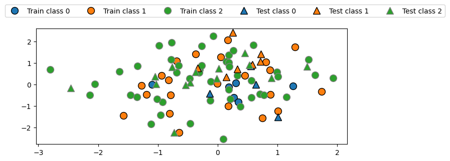
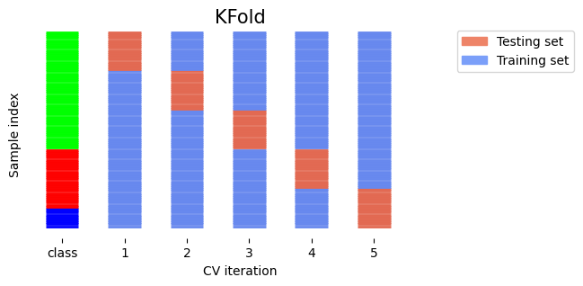
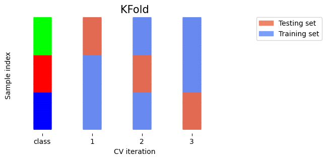
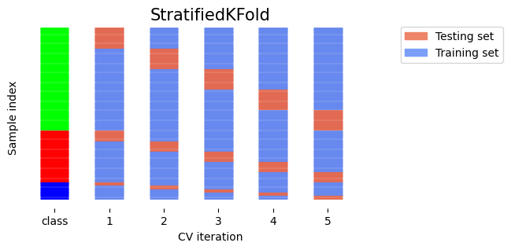
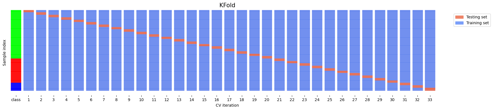
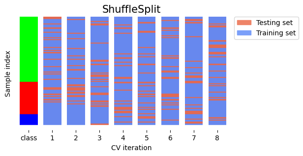
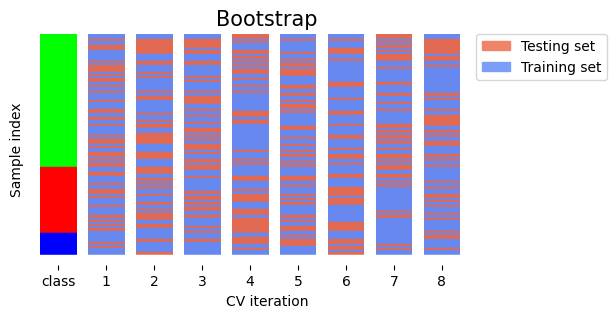
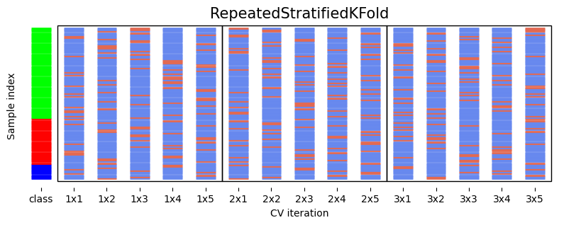

Lectura 10-3: Validación cruzada#
Técnicas de estimación del rendimiento#
Evaluar siempre los modelos como si predijeran datos futuros
No tenemos acceso a los datos futuros, así que fingimos que algunos datos están ocultos
Manera más sencilla: la holdout (simple división entrenamiento-prueba)
Dividir aleatoriamente los datos (y las etiquetas correspondientes) en un conjunto de entrenamiento y otro de prueba (por ejemplo, 75%-25%).
Entrene (ajuste) un modelo con los datos de entrenamiento, evalue con los datos de prueba
Show code cell source
import numpy as np
import matplotlib.pyplot as plt
from sklearn.model_selection import (TimeSeriesSplit, KFold, ShuffleSplit, train_test_split,
StratifiedKFold, GroupShuffleSplit,
GroupKFold, StratifiedShuffleSplit)
from matplotlib.patches import Patch
np.random.seed(1338)
cmap_data = plt.cm.brg
cmap_group = plt.cm.Paired
cmap_cv = plt.cm.coolwarm
n_splits = 4
# Generate the class/group data
n_points = 100
X = np.random.randn(100, 10)
percentiles_classes = [.1, .3, .6]
y = np.hstack([[ii] * int(100 * perc)
for ii, perc in enumerate(percentiles_classes)])
# Evenly spaced groups repeated once
rng = np.random.RandomState(42)
group_prior = rng.dirichlet([2]*10)
rng.multinomial(100, group_prior)
groups = np.repeat(np.arange(10), rng.multinomial(100, group_prior))
Show code cell source
import mglearn
X_train, X_test, y_train, y_test = train_test_split(X, y, random_state=0)
fig, ax = plt.subplots(figsize=(8, 3))
mglearn.discrete_scatter(X_train[:, 0], X_train[:, 1], y_train,
markers='o', ax=ax)
mglearn.discrete_scatter(X_test[:, 0], X_test[:, 1], y_test,
markers='^', ax=ax)
ax.legend(["Train class 0", "Train class 1", "Train class 2", "Test class 0",
"Test class 1", "Test class 2"], ncol=6, loc=(-0.1, 1.1));

Validación cruzada K-fold#
Cada división aleatoria puede dar lugar a modelos (y puntuaciones) muy diferentes
por ejemplo, todos los ejemplos fáciles (o difíciles) podrían acabar en el conjunto de prueba
Divida los datos en k partes del mismo tamaño, denominadas pliegues.
Cree k divisiones, utilizando cada vez un pliegue diferente como conjunto de prueba.
Calcule k puntuaciones de evaluación, agréguelas después (por ejemplo, tome la media).
Examine la varianza de las puntuaciones para ver lo sensibles (inestables) que son los modelos.
Un k grande da mejores estimaciones (más datos de entrenamiento), pero es caro computacionalmente
Show code cell source
def plot_cv_indices(cv, X, y, group, ax, lw=2, show_groups=False, s=700, legend=True):
"""Create a sample plot for indices of a cross-validation object."""
n_splits = cv.get_n_splits(X, y, group)
# Generate the training/testing visualizations for each CV split
for ii, (tr, tt) in enumerate(cv.split(X=X, y=y, groups=group)):
# Fill in indices with the training/test groups
indices = np.array([np.nan] * len(X))
indices[tt] = 1
indices[tr] = 0
# Visualize the results
ax.scatter([n_splits - ii - 1] * len(indices), range(len(indices)),
c=indices, marker='_', lw=lw, cmap=cmap_cv,
vmin=-.2, vmax=1.2, s=s)
# Plot the data classes and groups at the end
ax.scatter([-1] * len(X), range(len(X)),
c=y, marker='_', lw=lw, cmap=cmap_data, s=s)
yticklabels = ['class'] + list(range(1, n_splits + 1))
if show_groups:
ax.scatter([-2] * len(X), range(len(X)),
c=group, marker='_', lw=lw, cmap=cmap_group, s=s)
yticklabels.insert(0, 'group')
# Formatting
ax.set(xticks=np.arange(-1 - show_groups, n_splits), xticklabels=yticklabels,
ylabel='Sample index', xlabel="CV iteration",
xlim=[-1.5 - show_groups, n_splits+.2], ylim=[-6, 100])
ax.set_title('{}'.format(type(cv).__name__), fontsize=15)
if legend:
ax.legend([Patch(color=cmap_cv(.8)), Patch(color=cmap_cv(.2))],
['Testing set', 'Training set'], loc=(1.02, .8))
ax.spines['top'].set_visible(False)
ax.spines['right'].set_visible(False)
ax.spines['left'].set_visible(False)
ax.spines['bottom'].set_visible(False)
ax.set_yticks(())
return ax
Show code cell source
fig, ax = plt.subplots(figsize=(6, 3))
cv = KFold(5)
plot_cv_indices(cv, X, y, groups, ax, s=700);

¿Puede explicar este resultado?
kfold = KFold(n_splits=3)
cross_val_score(logistic_regression, iris.data, iris.target, cv=kfold)
Show code cell source
from sklearn.model_selection import KFold, StratifiedKFold, cross_val_score
from sklearn.datasets import load_iris
from sklearn.linear_model import LogisticRegression
iris = load_iris()
logreg = LogisticRegression()
kfold = KFold(n_splits=3)
print("Cross-validation scores KFold(n_splits=3):\n{}".format(
cross_val_score(logreg, iris.data, iris.target, cv=kfold)))
Cross-validation scores KFold(n_splits=3):
[0. 0. 0.]
Show code cell source
fig, ax = plt.subplots(figsize=(6, 3))
plot_cv_indices(kfold, iris.data, iris.target, iris.target, ax, s=700)
ax.set_ylim((-6, 150));

Validación cruzada K-Fold estratificada#
Si los datos están desequilibrados, algunas clases tienen pocas muestras
Es probable que algunas clases no estén presentes en el conjunto de prueba
Estratificación: Las proporciones entre clases se conservan en cada pliegue
Ordenar los ejemplos por clase
Separe las muestras de cada clase en k conjuntos (estratos)
Combinar los estratos correspondientes en pliegues
Show code cell source
fig, ax = plt.subplots(figsize=(6, 3))
cv = StratifiedKFold(5)
plot_cv_indices(cv, X, y, groups, ax, s=700)
ax.set_ylim((-6, 100));

Validación cruzada Leave-One-Out#
Validación cruzada de k pliegues con k igual al número de muestras
Completamente insesgada (en términos de división de datos), pero costosa desde el punto de vista computacional
En realidad generaliza menos bien hacia datos no vistos
Los conjuntos de entrenamiento están correlacionados (se solapan mucho)
Se ajusta en exceso a los datos utilizados para la evaluación (completa).
Una muestra diferente de los datos puede dar resultados distintos.
Sólo se recomienda para conjuntos de datos pequeños
Show code cell source
fig, ax = plt.subplots(figsize=(20, 4))
cv = KFold(33) # There are more than 33 classes, but this visualizes better.
plot_cv_indices(cv, X, y, groups, ax, s=700)
ax.set_ylim((-6, 100));

Validación cruzada Shuffle-Split#
Baraja los datos, muestrea puntos (
train_size) aleatoriamente como el conjunto de entrenamientoútil con conjuntos de datos muy grandes
Nunca se utiliza si los datos están ordenados (por ejemplo, series temporales)
Show code cell source
fig, ax = plt.subplots(figsize=(6, 3))
cv = ShuffleSplit(8, test_size=.2)
plot_cv_indices(cv, X, y, groups, ax, n_splits, s=700)
ax.set_ylim((-6, 100))
ax.legend([Patch(color=cmap_cv(.8)), Patch(color=cmap_cv(.2))],
['Testing set', 'Training set'], loc=(.95, .8));

El bootstrap#
Muestrea n (tamaño del conjunto de datos) puntos de datos, con reemplazo, como conjunto de entrenamiento (el bootstrap)
Por término medio, las muestras bootstrap incluyen el 66% de todos los puntos de datos (algunos son duplicados)
Utilice las muestras no muestreadas (fuera de bootstrap) como conjunto de prueba
Repetir \(k\) veces para obtener \(k\) puntuaciones
Similar a Shuffle-Split con
train_size=0.66,test_size=0.34pero sin duplicados
Show code cell source
from sklearn.utils import resample
# Toy implementation of bootstrapping
class Bootstrap:
def __init__(self, nr):
self.nr = nr
def get_n_splits(self, X, y, groups=None):
return self.nr
def split(self, X, y, groups=None):
indices = range(len(X))
splits = []
for i in range(self.nr):
train = resample(indices, replace=True, n_samples=len(X), random_state=i)
test = list(set(indices) - set(train))
splits.append((train, test))
return splits
fig, ax = plt.subplots(figsize=(6, 3))
cv = Bootstrap(8)
plot_cv_indices(cv, X, y, groups, ax, n_splits, s=700)
ax.set_ylim((-6, 100))
ax.legend([Patch(color=cmap_cv(.8)), Patch(color=cmap_cv(.2))],
['Testing set', 'Training set'], loc=(.95, .8));

Validación cruzada repetida#
La validación cruzada sigue siendo sesgada en el sentido de que la división inicial puede hacerse de muchas maneras
Validación cruzada repetida, o n-veces-k-veces:
Barajar los datos aleatoriamente, hacer una validación cruzada k-fold
Se repite n veces y se obtienen n veces k puntuaciones
Insesgada, muy robusta, pero n veces más cara.
Show code cell source
from sklearn.model_selection import RepeatedStratifiedKFold
from matplotlib.patches import Rectangle
fig, ax = plt.subplots(figsize=(10, 3))
cv = RepeatedStratifiedKFold(n_splits=5, n_repeats=3)
plot_cv_indices(cv, X, y, groups, ax, lw=2, s=400, legend=False)
ax.set_ylim((-6, 102))
xticklabels = ["class"] + [f"{repeat}x{split}" for repeat in range(1, 4) for split in range(1, 6)]
ax.set_xticklabels(xticklabels)
for i in range(3):
rect = Rectangle((-.5 + i * 5, -2.), 5, 103, edgecolor='k', facecolor='none')
ax.add_artist(rect)

Elección de un procedimiento de estimación del rendimiento#
No hay reglas estrictas, sólo directrices:
Utilizar siempre la estratificación para la clasificación (sklearn lo hace por defecto)
Utilice holdout para conjuntos de datos muy grandes (por ejemplo, >1.000.000 ejemplos)
O cuando los aprendices no siempre convergen (por ejemplo, aprendizaje profundo)
Elija k en función del tamaño del conjunto de datos y los recursos
Utilice LOO para conjuntos de datos muy pequeños (por ejemplo, <100 ejemplos)
En caso contrario, utilice la validación cruzada
Más popular (y teóricamente sólido): CV de 10 veces
La bibliografía sugiere que 5x2 veces CV es mejor
Utilice la agrupación o la exclusión de un solo sujeto para datos agrupados
Utilizar “entrenar y luego probar” para series temporales
Para mas información consulte diferentes estrategias CV en scikit-learn